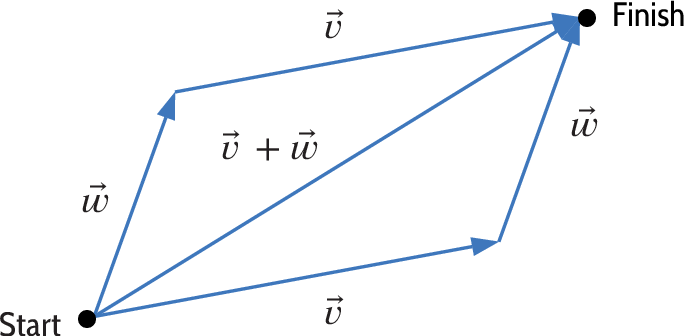
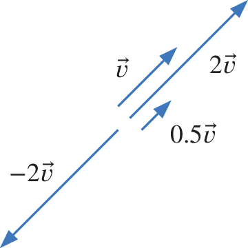
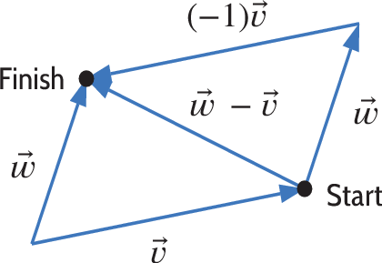

Section 3 Key Concepts
The Definition of a Vector and Vector Terminology.
-
Naively, a vector is a quantity with both a magnitude and a direction. More specifically:
- Geometrically : A vector is an arrow whose length is the magnitude, and whose direction is given by the direction in which the arrow points.
-
Algebraically : A vector \(\vec{v}\) is an ordered \(n\) -tuple \(\vec{v}= (v_{1},\dots ,v_{n})\) of real numbers. The numbers \(v_{1},\dots ,v_{n}\) are called the components or coordinates of \(\vec{v}\text{.}\) To differentiate them from points, we sometimes use the notation \(\vec{v}= \langle v_{1},\dots ,v_{n}\rangle\text{.}\) In particular, the interactive exercises in this worksheet will not accept the \((v_{1},\dots ,v_{n})\) notation for vectors. To input a vector you will need to use the notation
< v1,v2,... ,vn >.
- Algebraic and Geometric Relationship : If we place an arrow representing a vector with tail at the origin, the algebraic representation \((v_{1},\dots ,v_{n})\) gives coordinates of the head of the arrow.
- The zero vector is the vector \(\vec{0}=(0,0,\dots ,0 )\) in \(n\)-space.
- A position vector is a vector \(\vec{v}\) with its tail placed at the origin.
- The geometric representation of the vector \(\vec{v} =(v_{1},\dots ,v_{n})\) at point \(P=(a_1,\dots ,a_n)\) is the vector \(\vec{v}\) placed with its tail at \(P\) in \(n\)-space. The head of this vector lies at the point \(B=(a_1+v_1,\dots ,a_n+v_n)\)
- Vectors between points : If \(P=(a_1,\dots ,a_n)\) and \(Q=(b_1,\dots ,b_n)\) are two points, the vector \(\vec{PQ}\) is the vector between them. Its algebraic representation is \((b_1-a_1, b_2-a_2,\dots ,b_n-a_n)\text{.}\)
- A vector of length \(1\) is called a unit vector . If \(\vec{v} \neq \vec{0}\) , the unit vector pointing in the same direction as \(\vec{v}\) is \(\frac{1}{||\vec{v} ||} \vec{v}\text{.}\) The process of finding such a vector is called normalizing \(\vec{v}\text{.}\)
Operations on Vectors.
- The magnitude of \(\vec{v}=(v_{1},v_{2},\dots ,v_n)\) denoted \(|| \vec{v} ||\) is calculated as \(|| \vec{v} || =\sqrt{v_{1}^2+v_{2}^2+\dots v_n^2}\)
-
Vector Addition
-
Geometrically, the sum \(\vec{v}+\vec{w}\) is a vector whose endpoint is reached after moving along \(\vec{v}\) followed by \(\vec{w}\) from the initial point.
 -
Algebraically, if \(\vec{v}=(v_{1},v_{2},\dots ,v_n)\) and \(\vec{w}=(w_{1},w_{2},\dots ,w_n)\) , then
\begin{equation*} \vec{v}+\vec{w}=(v_1+w_{1},v_2+w_{2},\dots ,v_n+w_n). \end{equation*} - Note that, \(\vec v+\vec w = \vec w+\vec v\text{.}\) Geometrically, this means that we can move first along \(\vec w\) and then along \(\vec v\) and end up at the same point (see the figure).
-
-
Scalar Multiplication
-
Geometrically, for a scalar \(C\neq 0\text{,}\) the scalar multiple \(C\vec{v}\) is a vector with magnitude \(|C|||\vec{v}||\) and direction the same as \(\vec{v}\) if \(C\) is positive and opposite to \(\vec{v}\) if \(C\) is negative. If \(C=0\) or \(\vec{v}=0\) then \(C\vec{v}=\vec{0}\)
 -
Algebraically, if \(\vec{v}=(v_{1},v_{2},\dots ,v_n)\) then
\begin{equation*} C\vec{v}=(Cv_1,Cv_2,\dots ,Cv_n). \end{equation*}
-
-
Vector Subtraction
-
Geometrically \(\vec{w} -\vec{v}\) is defined as \(\vec{w} +(-\vec{v})\text{,}\) so we move along \(\vec{w}\) and then backward along \(\vec{v}\)
 -
Algebraically, if \(\vec{v}=(v_{1},v_{2},\dots ,v_n)\) and \(\vec{w}=(w_{1},w_{2},\dots ,w_n)\) then
\begin{equation*} \vec{w}-\vec{v}=(w_1-v_1,w_2-v_2,\dots ,w_n-v_n) \end{equation*}
-
Parallel vectors.
Two vectors \(\vec{v}\) and \(\vec{u}\) are parallel if one is a non-zero scalar multiple of the other, so \(\vec{v}=C\vec{u}\text{.}\) They are in the same direction if \(C\) is positive and opposite directions if \(C\) is negative.Other Representations of Vectors.
To differentiate them from points, we sometimes use the notation \(\vec{v}= \langle v_{1},\dots ,v_{n}\rangle\) instead of \(( v_{1},\dots ,v_{n})\text{.}\)
- The standard basis vectors for \(3\)-space are \(\vec{i}\text{,}\) \(\vec{j}\text{,}\) and \(\vec{k}\text{,}\) the unit vectors pointing in the direction of the positive \(x\)-axis, \(y\)-axis, and \(z\)-axis respectively. The vector \(\vec{v} =( a,b,c)\) can also be written as \(a\vec{i} +b\vec{j} +c\vec{k}\text{.}\) In this worksheet you can input vectors in \(3\)-space using the notation
a*i+b*j+c*kor the notation<a,b,c>. The notation(a,b,c)will not be accepted for vectors (it will be interpreted as a point). - If a vector \(\vec v\) makes an angle \(\theta\) with the positive \(x\)-axis, then \(\vec{v}=||\vec{v}|| (\cos{(\theta )} \vec{i} +\sin{(\theta )} \vec{j} )\text{.}\) We call this the polar form of \(\vec v\text{.}\)